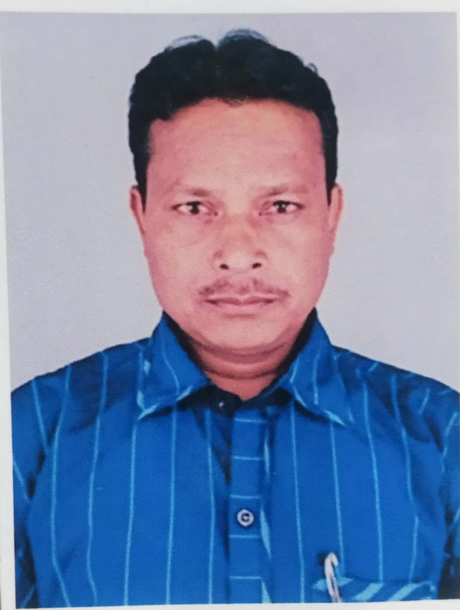
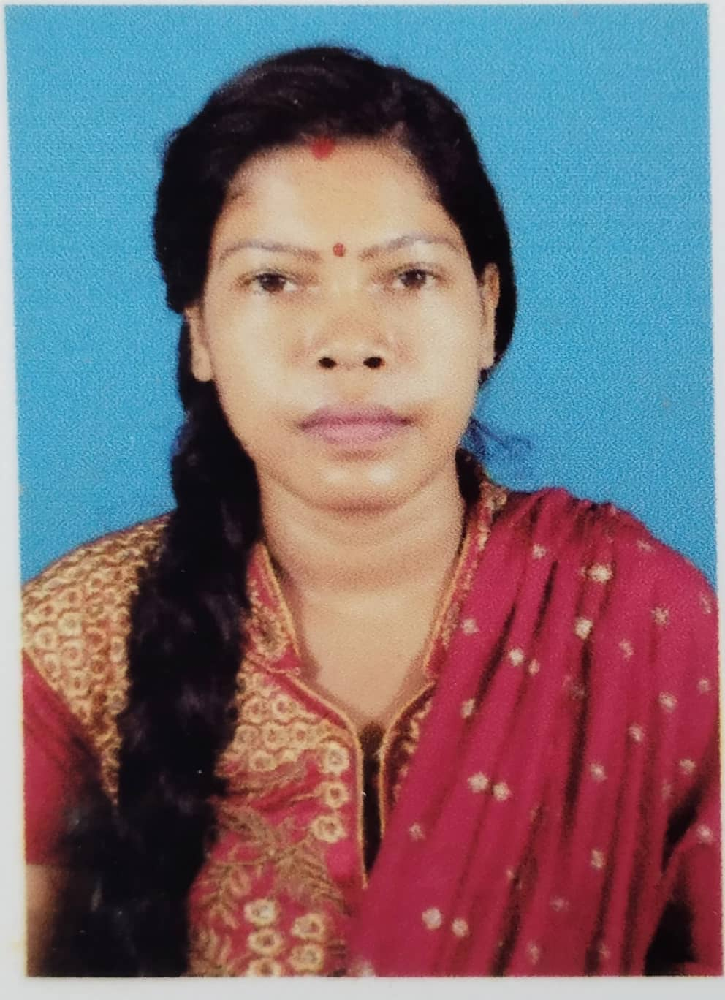
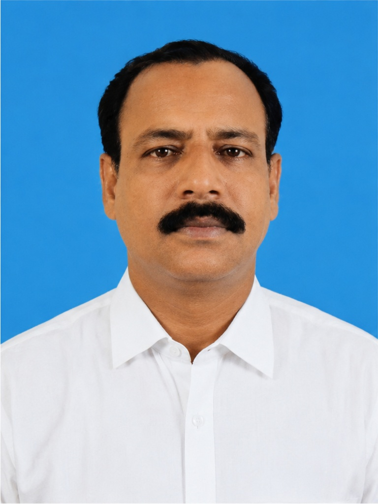
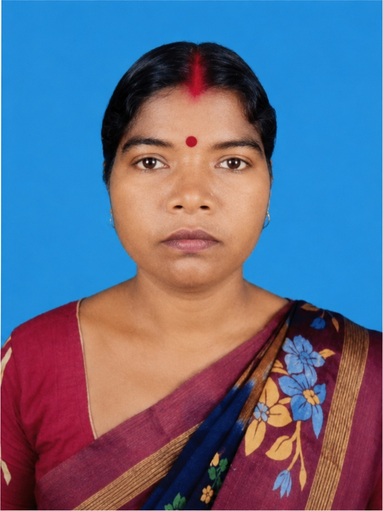

Shilu Rekha Charitable Trust · Est. 2020 · Bankura, West Bengal
Empowering Rural Communities, One Life at a Time
SRCT works with women, farmers, and youth in Bankura District to build sustainable livelihoods through skill development, vocational training, and community empowerment.
40 digital literacy camps across 40 villages in Bankura District, reaching 1,580 rural residents with knowledge on savings, banking, and fraud prevention.
A nationally accredited NGO dedicated to empowering rural communities in Bankura District, West Bengal, since 2020.
Our Mission & Recognition
Our Mission
SRCT is dedicated to empowering rural communities, particularly women and underserved groups, by providing vocational training, sustainable livelihood opportunities, and access to essential resources.
Our Vision
To foster self-reliance and improve the quality of life in marginalized communities of Bankura District and eventually across India.
Accreditations & Recognition
Registered under Ministry of MSME, Govt. of India
Registered with NITI Aayog
Approved under Income Tax Act — Section 12A & 80G
CSR1 registered — eligible for CSR funding
Recognized by Government of West Bengal
National SC/ST Hub partner
Message from the Director
"When we started SRCT in 2020, we were a small group with a big dream — to uplift the rural communities of Bankura through skill, knowledge, and dignity. The early years were about laying the foundation: building trust within villages, forming Self-Help Groups, and understanding what our communities truly needed.
In FY 2024-25, we took our first major leap. With NABARD's support, we conducted 40 Financial Digital Literacy Camps across 4 blocks, reaching over 1,580 rural families. Our women's livelihood program took shape as SHGs began producing phenyl, incense sticks, and soap powder. We trained 500+ farmers in organic practices, and our partnership with the Pollinate Group brought solar lighting and eco-friendly products to underserved households.
FY 2025-26 has been a year of consolidation and expansion. We launched the Swasthya Shakti menstrual hygiene program, introduced mushroom farming as a new livelihood stream, and initiated an Aegle Marmelos medicinal plant project. Most importantly, we began constructing our own community centre — a permanent home for SRCT's operations and a hub for the communities we serve.
Looking ahead, we have ambitious plans — an AI-enabled Smart Health Hub, a Solar Sakhi program, and expanded vocational training. From a humble beginning to touching 2,000+ lives, this journey has been possible only because of our volunteers, donors, and the resilient communities we serve. Together, we shall build a future where every individual thrives with dignity."
Dipak Kumar Mallick Managing Director, SRCT
Annual Reports
Download our annual reports to learn more about SRCT's journey, impact, and financial transparency.
Promote skill development for illiterate, newly literate, and school dropout populations.
2
Address socio-economic challenges through education and awareness on health, environment, and human rights.
3
Establish small-scale industries to enable economic independence for youth and women.
4
Facilitate alternative employment opportunities through vocational trainings and workshops.
Our Team
Dipak Kumar Mallick
Managing Director

Rajendra Metya
Treasurer

Shilabati Mudi
Secretary

Nirmal Chandra Hembram
Project Manager

Panmoni Baskey Kisku
Project Coordinator
Dipen Mandal
Fund Manager - CSR
Subrata Mallick
Volunteer - Administrative
Our Reach
Current Focus: Khatra Subdivision, Bankura District
Currently operating in the Khatra Subdivision of Bankura District, West Bengal, SRCT is actively working to expand its programs across West Bengal and eventually throughout India. By building infrastructure, imparting skills, and promoting self-reliance, SRCT aims to transform the lives of financially backward rural populations on a larger scale.
Agricultural items: brown rice, Dal Bori, local honey
Cultivated mushrooms and handmade goods
🔧
Skill Development & Vocational Training
Practical, hands-on training programs that equip unemployed youth and women with marketable skills to establish their own small-scale cottage industries.
Phenyl, incense stick making, soap powder production
Dressmaking using modern sewing technology
Scientific mushroom cultivation
Pickle making and food processing
Tools and startup support provided
🌾
Agriculture & Sustainable Practices
Training and hands-on workshops to transform conventional farming into sustainable, organic practices that boost yield while protecting the environment.
Organic and sustainable farming workshops for 500+ farmer groups
Bio-fertilizer and vermicompost production training
Seed distribution with WB Dept. of Horticulture
Aegle Marmelos (Bael) medicinal plant processing
Reduced chemical fertilizer dependency
🤝
Collaboration with Government & Welfare Programs
Partnering with government bodies at state and national level to extend the reach of welfare schemes to marginalized rural populations.
WB Agriculture and Horticulture Department partnership
MSME Development and Facilitation Office collaboration
National SC/ST Hub partner
NABARD project implementation
Udyami Bangla (MSME newsletter) featured partner
📢
Community Engagement & Education
Raising awareness and building civic consciousness across rural communities to create informed, resilient, and empowered populations.
40 Financial Digital Literacy Camps in 40 villages
Health and hygiene awareness campaigns
Environment conservation and tree plantation drives
Impactful projects delivered across FY 2024–25 and FY 2025–26 in Bankura District, West Bengal.
FY 2024-25 & 2025-26
Women's Livelihood & Micro-Enterprise Development
SRCT's flagship program empowering 300+ rural women through Self-Help Groups. Women are trained in phenyl, incense stick, and soap powder production, earning Rs. 2,500–3,000/month consistently. The program now includes product packaging, quality control, and marketing training with linkages to local markets.
Continued engagement of 300+ women across multiple Self-Help Groups
Training in phenyl, incense stick, and soap powder production
Product marketing and packaging skill development
Equipment and raw material support provided to groups
Linkages established with local markets for product sales
FY 2025-26
Swasthya Shakti: Sanitary Napkin Distribution & Awareness
Successfully implemented menstrual hygiene awareness sessions across multiple villages, reaching around 150 women and adolescent girls. Interactive workshops with projector presentations educated women on menstrual health, safe hygiene practices, and the importance of sanitary napkins.
~150 Women ReachedMultiple VillagesFree DistributionAwareness Workshops
Large-scale awareness workshops conducted across multiple villages
Interactive sessions using projector presentations on menstrual hygiene
Free sanitary napkin distribution to around 150 participants
Dispelled myths and taboos around menstruation in rural communities
Promoted dignity, health, and empowerment among underserved women
FY 2025-26
Mushroom Farming Training Program
A comprehensive oyster mushroom cultivation training program teaching rural community members scientific techniques for substrate preparation, spawn inoculation, and harvesting. Few households are now generating around Rs. 5,000 per month from mushroom sales.
White Oyster MushroomLow InvestmentRs. 5,000/monthMarket Ready
Training in scientific oyster mushroom cultivation techniques
Setup using locally available materials (paddy straw)
Substrate preparation and spawn inoculation training
Multiple trainees established their own cultivation units
Few households generating around Rs. 5,000 per month
FY 2025-26
Aegle Marmelos (Bael) Medicinal Plant Initiative
A new initiative focused on cultivation and processing of Bael, a highly valued medicinal plant. Rural and tribal communities engaged in systematic harvesting, cutting, and sun-drying of Bael fruit for Ayurvedic and herbal markets, generating approximately Rs. 10,000 as additional income.
Training in Bael fruit harvesting, processing, and drying
Community-based collection and processing
Market linkage for dried Bael products
Promotion of traditional medicinal knowledge
Approximately Rs. 10,000 collected by tribal community as additional income
FY 2024-25
Financial Digital Literacy Camp (NABARD)
In collaboration with NABARD, Fino Bank, and Imagica Foundation, SRCT conducted 40 financial literacy camps across 40 villages in 4 blocks of Bankura District, engaging 1,580+ rural residents in topics like savings, fraud awareness, and government schemes.
40 Camps1,580+ Residents4 Blocks40 Villages
Household budgeting, savings & investments training
Fraud awareness and digital safety education
Government scheme enrollment (PM-KISAN, Atal Pension, KCC)
Training 500+ farmers in organic farming, vermicomposting, and bio-fertilizer production in collaboration with the WB Department of Horticulture. High-quality seeds (watermelon, vegetables) distributed to farming communities, reducing chemical fertilizer dependency.
500+ FarmersWB Horticulture DeptOrganic PracticesSeed Distribution
Organic farming and vermicomposting workshops
Bio-fertilizer production training
Seed distribution: watermelon, vegetables
Reduced chemical fertilizer dependency
Increased crop yields for participating farmers
FY 2025-26
World Environment Day – Tree Plantation Drive
On June 5, 2025, SRCT organized a community tree plantation drive at Pairaguri village in Raipur Block. Over 100 saplings were planted by rural women, youth, and community leaders to promote afforestation and environmental awareness.
June 5, 2025100+ SaplingsPairaguri VillageCommunity Drive
Over 100 saplings planted at Pairaguri, West Bengal
Community participation including women, youth, and local leaders
Awareness campaign on environmental conservation
Promotion of sustainable practices aligned with India's green goals
FY 2025-26
Saree Distribution Program
In October 2024, during the festive season, SRCT distributed sarees to women from underserved communities, bringing joy, dignity, and a sense of cultural inclusion during celebrations. This initiative addresses emotional and cultural well-being alongside economic empowerment.
October 2024Sarees DistributedCultural InclusionCommunity Bonding
Sarees distributed to women from underserved communities
Promoted cultural inclusion and dignity
Reinforced SRCT's holistic approach to community development
SRCT's planned future projects and expansion strategy to reach more villages and transform more lives.
Our Strategy
As SRCT continues its mission, we are focused on scaling up impactful initiatives and implementing larger projects that address critical social and economic challenges.
🤝
Strengthen Collaborations
Build stronger partnerships with businesses, government bodies, and local communities.
💰
Secure CSR Funding
Actively seek CSR partnerships and public donations to fund the next generation of projects.
📈
Expand Ongoing Programs
Scale up successful programs to ensure sustainable growth and broader geographic outreach.
🗺️
Expand Across West Bengal
Move beyond Khatra Subdivision to reach all of Bankura District, then across West Bengal and India.
Planned Future Projects
🏥
AI Enabled Smart Health Hub
Establish a permanent AI-enabled healthcare facility delivering accessible primary healthcare to rural and tribal communities in Block Raipur, Bankura. AI-assisted diagnostics (BP monitors, ECG, anemia scanners), telemedicine consultations with specialists, mobile medical outreach to remote villages, and digital health cards for all beneficiaries. Expected to serve 6,000+ patients and 4,000+ women in Year 1.
💻
Computer Vocational Training for Youth
To bridge the digital divide, SRCT plans to establish computer literacy centers offering basic and advanced IT skills to rural youth, empowering them with opportunities for employment and entrepreneurship in a rapidly evolving digital economy.
🧵
Women Empowerment through Tailoring Camps
These camps aim to provide women from marginalized backgrounds with practical skills in stitching and tailoring, enabling them to establish home-based garment businesses and achieve financial independence — building on SRCT's proven SHG model.
🌿
Promotion of Organic Farming
This project focuses on training rural farmers in organic agricultural practices, enhancing soil health, reducing chemical dependency, and ensuring sustainable income through eco-friendly produce. An expansion of SRCT's existing agriculture programs.
☀️
Solar Sakhi Program
Empowering 60–80 rural women as solar micro-entrepreneurs ("Solar Sakhis") while providing clean solar lighting to underserved households in Block Raipur, Bankura. Includes 45-day technical training, establishment of a central solar charging hub, 20 women-managed solar kiosks across villages, and distribution of 300 solar lanterns and 120 home-light kits. Women can earn ₹4,000–₹9,000/month, bringing clean energy to 800–1,000 households.
Funding These Projects
The successful implementation of these future projects depends on securing donations and funding from individuals, corporations, and government bodies. SRCT is actively engaging with potential donors, corporate partners, and government agencies to gather the necessary resources.
SRCT is CSR1 registered and eligible for Corporate Social Responsibility funding under the Companies Act, 2013. Donations are also eligible for tax deduction under Section 80G of the Income Tax Act.
SRCT is actively seeking CSR partnerships to fund our upcoming community projects. We are CSR1 registered under the Ministry of Corporate Affairs and eligible for CSR contributions under Schedule VII of the Companies Act, 2013.
Our projects align with the following Schedule VII categories:


.jpg)
.jpg)
.jpg)
.jpg)
.jpg)
.jpg)
.jpg)
.jpg)
.jpg)
.jpg)

.jpg)
.jpg)
.jpg)
.jpg)
.jpg)
.jpg)
.jpg)
.jpg)
.jpg)
.jpg)
.jpg)
.jpg)
.jpg)


.jpg)
.jpeg)
.jpeg)
.jpeg)